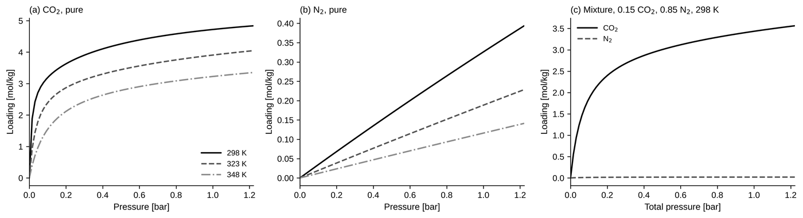
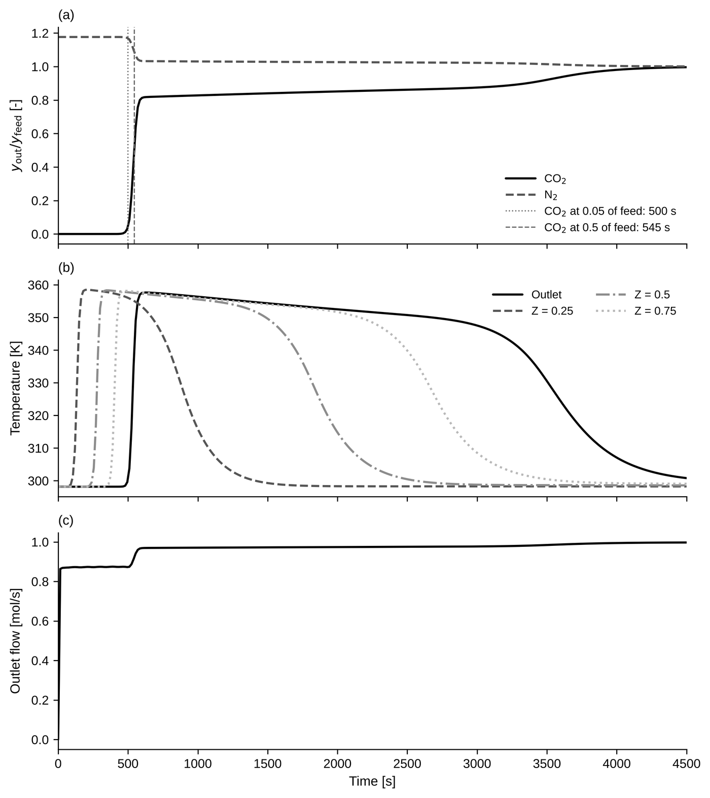
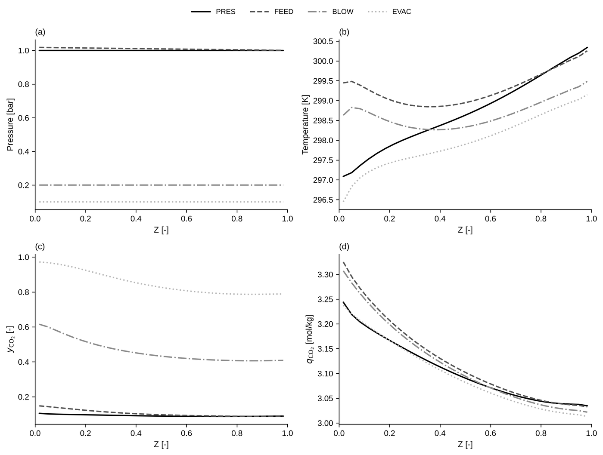
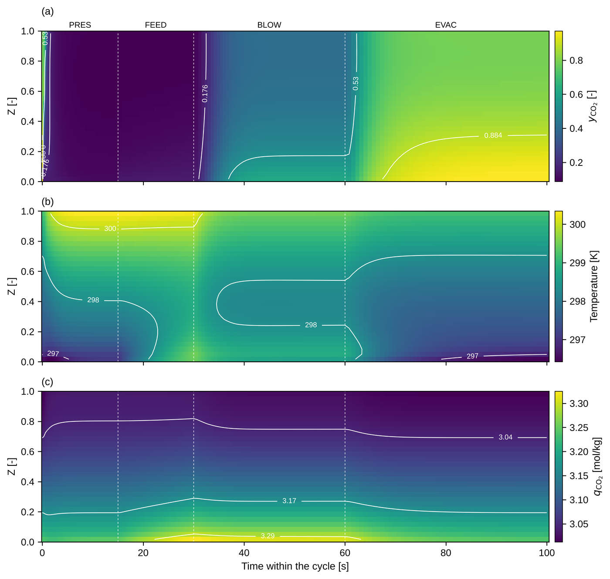
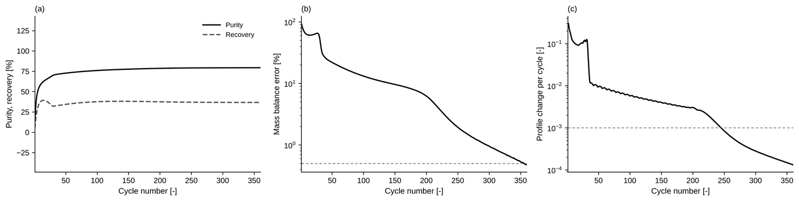
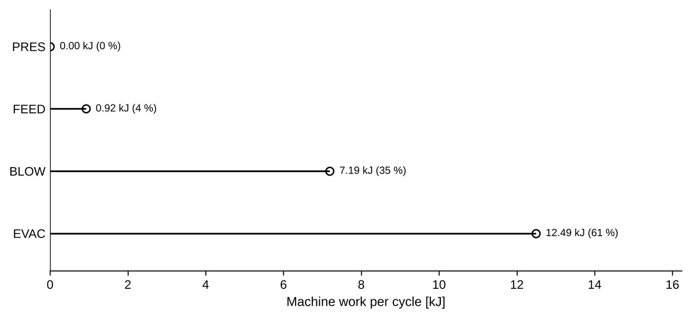

Outputs and figures¶
Every simulation can be reported in one call: the numbers as CSV files, the standard figures of adsorption processes as PNG and PDF (with matplotlib, pip install matplotlib), and Summary.md, a readable summary.
from swingpy.report import report_breakthrough, report_run
report_breakthrough(model, result, "Output/Breakthrough") # a single feed step
report_run(model, run, "Output/Cycle") # a cycle run (Cycle.run)
problem.report(run, "Output/Cycle") # the same for a specification (swingpy.spec)
The figures below come from tools/Make gallery.py: a breakthrough and a four-step VSA cycle on zeolite 13X (examples/specs/VSA zeolite 13X flue gas.yaml).
Numbers (swingpy.analysis, no matplotlib needed)¶
| Function | Content |
|---|---|
breakthrough_metrics(model, result, component) |
times at which the outlet reaches 5, 50 and 95 % of the feed mole fraction, stoichiometric time, amount retained (exact), dynamic capacity, mass transfer zone, peak outlet temperature |
step_table(model, results) |
per step: duration, pressures at both ends, moles of each component through each end, stream labels, machine work, heat through the wall |
cycle_summary(model, run) |
purity, recovery, specific energy, productivity, cycle time, balance error, profile change, composition of every stream |
stream_table, convergence_table, profile_table, cycle_history_table |
streams per cycle; KPIs of every cycle; profiles at the end of every step; time series of one cycle at chosen positions and at both ends |
end_flows(model, result, end), column_profiles(model, state) |
flows and composition crossing an end; profiles of one state |
export_run(model, run, folder), export_breakthrough(model, result, folder) |
all of the above as CSV files |
Flows are in mol/s and positive out of the column, pressures in bar, temperatures in K, loadings in mol/kg.
Figures (swingpy.plotting)¶
All figures share one journal style (apply_style()): open axes, outward ticks, no grid, Arial-metric sans serif type, frameless legends, titles in regular weight with the panel letter on the same line, PNG at 300 dpi plus a vector PDF.
- Curves computed by the model are lines only, told apart by grey level (black,
#555555,#8C8C8C,#B8B8B8) and line style (series_style(i)); a lone curve is solid black (single_style()). - Measured or published values are the only points: open markers with no fill (
open_marker_style(i)), so model and data can never be mistaken for each other. - Time histories separate the steps with dotted lines and the cycles with dashed ones, name the steps above the axes, and carry no shading.
- Quantities per step or per kind of energy are lollipops: a thin stem from zero to an open marker, one row per step.
- Position-time maps use the viridis scale (Crameri, Shephard and Heron, Nat. Commun. 11 (2020) 5444: perceptually uniform, readable in grey) with white contours at 10, 50 and 90 % of the range and always a colour bar.
Step codes¶
Every step has a four-letter code (STEP_CODES, step_meaning(code)); steps of the same kind are numbered in the fourth place.
| Code | Step | Code | Step |
|---|---|---|---|
PRES |
pressurization | HREF |
heavy reflux |
FEED |
feed (adsorption) | HEAT |
heating |
BLOW |
blowdown | COOL |
cooling |
EVAC |
evacuation | HEVA |
heating under evacuation |
PURG |
purge | DESO |
desorption |
LPPR |
light product pressurization | DEPR |
co-current depressurization |
EQDN |
pressure equalization, donor | RINS |
rinse |
EQUP |
pressure equalization, receiver | RECY |
recycle |
LREF |
light reflux | SUPP |
supply of purge to another column |
IDLE |
idle | EQD1, EQU2, HEA1 |
numbered steps of one kind |
Equilibrium¶
plot_isotherms(adsorbent, components, temperatures, max_pressure, path, composition=...): pure-component isotherms at several temperatures and the competitive loadings of a mixture.

Breakthrough¶
plot_breakthrough(model, result, path): outlet mole fractions relative to the feed with the breakthrough times, temperatures at the outlet and inside the column, outlet flow.

plot_step_profiles(model, result, path): the column at several moments of one step, here the fronts moving through the bed.

Cycle at steady state¶
The four-step cycle of the same example, run with plain cycles from a column filled with nitrogen at 0.1 bar: cyclic steady state (mass balance error below 0.5 % and profile change below 10−3 for five cycles in a row) after 360 cycles, purity 79.39 %, recovery 36.64 %.
plot_all(model, run.recent, run.history, prefix) draws all of these; the file names follow the prefix (a folder when it ends with /).
| File | Content |
|---|---|
Profiles |
pressure, temperature, mole fraction and loading along the column at the end of each step |
Feed step profiles |
the column at several moments of the feed step |
Cycle pressure |
pressure at both ends over one cycle (the cycle diagram) |
End flows |
molar flow of every component through both ends |
End compositions |
composition of the gas leaving each end (the outlet analyser traces) |
Step balance |
moles of each component through each end in every step |
Maps |
mole fraction, temperature and loading over position and time |
Last cycle, Last three cycles, Last ten cycles |
histories at chosen positions (thermocouples) |
Convergence |
purity, recovery, mass balance error and profile change per cycle |
Energy |
compressor and pump work of each step |






